“Nüshu is a syllabic script created and used exclusively by women in Jiangyong Prefecture, Hunan Province, China. The women were forbidden formal education for many centuries and developed the Nüshu script in order to communicate with one another. They embroidered the script into cloth and wrote it in books and on paper fans.”
https://www.omniglot.com/writing/nushu.htmPlaces Nushu are used:
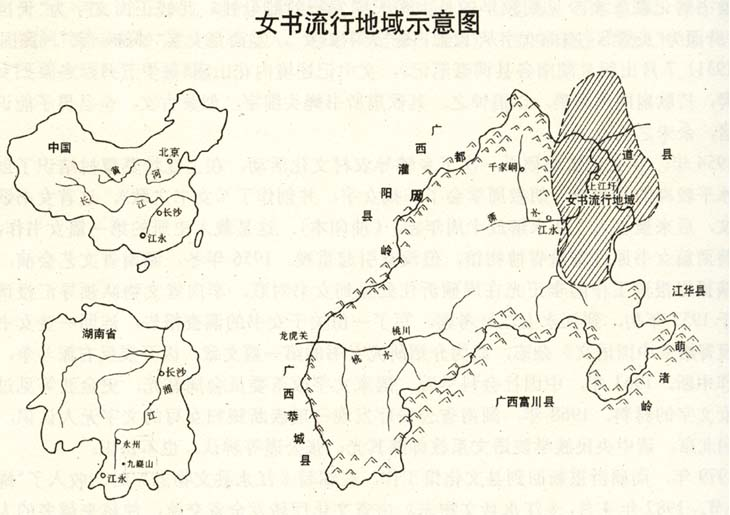 http://www.jiangyong.gov.cn/jiangyong/sqwh/201511/7199cc776bfb438e84345f82d7601e7a.shtml江永县上江圩乡、城关镇、黄甲岭乡、铜山岭农场等地，历史上流传着一种记录当地土话的特殊文字，流行地域以上江圩为中心，波及毗邻的道县下蒋乡、新车乡。这种文字只在妇女范围内使用，称之为“女字”，通称“女书”。
Translate with DeepL
In Jiangyong County, in Shangjiangxu Township, Chengguan Township, Huangjialing Township, Tongshanling Farm and other places, there has historically been a special script for recording the local vernacular, with Shangjiangxu as its centre of popularity, and spreading to the neighbouring Daocheng County, Xiajiang Township and Xinxin Township. This script was used only by women and was called ‘female script’, commonly known as ‘Nushu’.
http://www.jiangyong.gov.cn/jiangyong/sqwh/201511/7199cc776bfb438e84345f82d7601e7a.shtml“女书究竟是自源，还是他源，大致有三种看法：即源自汉字说、源自西夏文说和独特的瑶族女性文字体系说。女书的产生时代，也有三种看法：即史前刻划符号说、不早于明代说和明清时代说，第一种观点从女书的字体结构、发音、语法规划等特点入手考证女书起源时代，认为女书是先秦时期商代古人文字的孑遗演变；第二种观点认为女书作为一套能完整记录语言的文字系统产生于中古以后，甚至是明代前后；第三种观点通过女书的史志文献、遗存及内容、传承等方面研究，提出女书起源于明清时期。几种观点虽经多次探讨争论，乃无定论。”
Translate with DeepL:
“There are three views as to whether the Nushu originated from the Chinese characters, from the Western Xia script and from the unique Yao women's writing system. There are also three views on the age of female script: prehistoric engraved symbols, not earlier than the Ming Dynasty, and the Ming and Qing Dynasties. The first viewpoint starts from the characteristics of female script such as font structure, pronunciation, and grammatical planning to prove the age of female script's origin, and believes that female script is a relic of the evolution of the ancient scripts of the Shang Dynasty of the pre-Qin period; the second viewpoint believes that female script, as a set of writing systems capable of recording language in its entirety, was produced in the Middle Ages, or even around the Ming Dynasty; the third viewpoint is based on the historical records of female script, and the third viewpoint is based on the historical records of female script. The second point of view is that Nushu, as a system of writing that can completely record language, was produced after the Middle Ages, even before and after the Ming Dynasty. Although these views have been discussed and debated many times, they are inconclusive.”
https://baike.baidu.com/item/%E5%A5%B3%E4%B9%A6/608945#reference-7"在江永民间，也流传几种女书来源的传说。
第一种，女妃造字。传说宋朝时荆田村出了一个才貌双全的女子名叫胡玉秀（有的说叫胡秀英），后补选入宫为妃。进宫后不久，遭到冷遇，苦闷异常。她想写信回家倾吐苦情，又怕被太监发现。于是心生一计，根据女红编造出一套文字，以歌谣体写在手绢上捎回家乡，并嘱咐亲人：要斜着看，用土话的音来读。于是这种文字就在江永妇女中传开了。
第二种，九斤姑娘造字。传说很久以前，上江圩的一位农妇生下一个女婴，体重九斤，故取名为九斤姑娘。她自幼天资聪敏，幼纺缝麻，织布绣花，无所不会，无所不精，还异想天开地造出了一写土话的文字，即女字。女书自然传入女作者华在其女书作品《要问女书何处来》中写道：“只听前人讲古话，九斤姑娘最聪明，女书本是姑娘做，做起女书传世间。”
第三种，盘巧造字。相传江永上江圩桐口村有一个叫盘巧的姑娘，心灵手巧，善唱山歌，擅描女红，喜欢结交姐妹，后来她被官兵劫往道州。为了向家人报信，她绞费苦心，根据女红图案造出字来，写了一封信藏在跟随她身边的爱犬身上带回，村中的姐妹得到这封信，读懂了其中内容，告知众乡亲设计把盘巧救回，从此这种奇特的文字就在当地女性中流传开来。
第四种，女红图案变文字。据江永县上江圩湾村妇女传说，古时候，生活在这一带的女子经常相聚在一起做女红，做出花样繁多，各不相同的图案。那时候女子不能念书，没有地位，她们把自己的苦难告诉别人，便在织布绣花图案上创制了这种文字。
女书的流传地域，主要在江永县东北部潇水两岸地区，以江永县上江圩镇普美村等15个村为中心，辐射至城关镇、铜山岭农场、黄甲岭等乡，以及相毗邻的道县田广洞、立福洞等村。随着这些地方女子外嫁，女书亦随之延伸到广西瑶族自治县、江永桃川镇、道县下蒋乡、新车乡、清塘乡等村庄，甚至扩展到广西富川、钟山、恭城、贺州以及广东的连州等南岭瑶族聚居地区。"
Translate with DeepL:
"In the folklore of Jiangyong, there are also several legends circulating about the origin of Nushu.
The first one is that the female consort created the characters. Legend has it that during the Song Dynasty, Jingtian Village produced a talented woman named Hu Yuxiu (some say it was called Hu Xiuying), who was selected to be a concubine in the palace. Soon after entering the palace, she was coldly treated and suffered a lot. She wanted to write home to pour out her feelings, but was afraid of being found by the eunuchs. So she had a plan, according to the women's red fabricated a set of words to the ballad written on a handkerchief to take home, and instructed their relatives: to be oblique, with the sound of the vernacular to read. So this kind of writing spread among the women in Jiangyong.
The second one, Jiujin girl made words. Legend has it that a long time ago, a peasant woman in Shangjiang Wei gave birth to a baby girl, weighing nine pounds, so she was named Jiu Jin girl. Since she was young and gifted, young spinning and sewing hemp, weaving and embroidery, nothing will not be, nothing is fine, but also whimsically created a written vernacular text, that is, the female word. Nushu naturally passed into the female author Hua in his work of Nushu ‘to ask where the Nushu’ wrote: ‘only to hear the former speak ancient words, nine catty girl is the most intelligent, Nushu is a girl to do, to do up the Nushu passed on to the world.’
The third type, disc clever to create words. Legend has it that Jiangyong Shangjiang Wei Tongkou village has a girl named Pan Qiao, handy, good at singing songs, good at drawing women's red, like to make friends with sisters, and then she was robbed by the soldiers to Daozhou. In order to report to her family, she racked her brains, according to the red pattern to create words, wrote a letter hidden in the following her side of the dog to bring back, the village sisters to get the letter, read the contents, told the villagers designed to Pan Qiao back, from this peculiar text on the local women in the circulation of the open.
The fourth, women's red pattern into text. According to Jiangyong County on the river Weiwan village women's legend, in ancient times, women living in this area often get together to do women's red, to make a variety of patterns, each with a different pattern. At that time, women could not study and had no status, they told others about their suffering, so they created this kind of text on the weaving and embroidery patterns.
Nushu were passed down geographically, mainly in the northeast of Jiangyong County on both sides of the Xiaoshui River, with 15 villages such as Pumei Village in Jiangyong County's Shangjiangxu Township as the centre, radiating to Chengguan Township, Tongshanling Farms, Huangjialing and other townships, as well as adjoining villages such as Tiangangdong and Lifudong in Daocheng County. As women from these places married outside, the Nushu also extended to villages in Guangxi Yao Autonomous County, Taochuan Township of Jiangyong, Xiajiang Township of Daocheng County, Xinxin Township, Qingtang Township, and even to the Yao-inhabited areas in the South Ridge of Guangxi, such as Fuchuan, Zhongshan, Gongcheng, Hezhou, and Lianzhou in Guangdong Province.
https://baike.baidu.com/reference/608945/533aYdO6cr3_z3kATPSNnqjyMyrMN4ir7b3bVONzzqIP0XOpUpqrQ5Ix6cMmsPBoAkXIvtdhbs8P2ea5TRNa7PcSc-w0XbwkyX-qBmaUyrbi_d00m4UWo4gRXPhD0fD0tEX40STbx_ON8mC_“Nüshu was mainly used in the creation of San Chao Shu (三朝書) or "Third Day Missives", cloth-bound booklets created by mothers to give to their daughters upon their marriage, or by woman to give to their close female friends. The San Chao Shu contained songs written in the Nüshu script expressing hopes and sorrow, and was delivered on the third day after a woman's marriage.”
“女书使用主要在以下几个方面：
- 一、祭祀 上江圩的妇女信仰“婆王”。新中国建立前，每年农历五月初十，她们都要到婆王庙(亦称花山庙)祭祀婆王。祭祀前重要的准备工作之一，就是将祈祷内容用女字写在纸上或扇上，其内容是自己美好的期望和消灾免祸的祷告。到祭祀那一天，妇女带着女书到婆王庙去读纸读扇，并将女书纸、扇奉献到婆王庙的神龛上。
- 二、读唱娱乐 1949年以前，上江圩一带保持男耕女织的习俗。妇女们很少参加农业生产，三五成群集中在一间屋子里做女红，常常是一边工作一边听人读唱女书纸扇。最热闹的妇女活动是“打三朝”和“斗牛节”。“打三朝”是姑娘出嫁后的第三天，以坐歌堂的形式唱歌跳舞，妇女们喜欢手拿用女字写的三朝书读读唱唱，非常热闹。“斗牛节”是每年农历四月初八，妇女们用黑米粑喂牛，并各自带一些食物，凑在一起聚餐、读唱女书。此外，读唱女书也是当地妇女串门、走亲戚、回娘家最喜爱的一种活动。唱到幽默的地方，听众会捧腹大笑;唱到哀怨时，在场者人人流泪。
- 三、信件往来 江永境内的年轻姑娘过去很喜欢结拜姊妹。两位姑娘结识以后关系融洽，如果其中一位希望与另一位结成姊妹，一般会自写或托人代写一封女书结交信，托女友送给对方，内容多半是推崇对方。对方如果同意结拜，就会托女友送来女书信件，邀她去家里做客。这种用女字写的纸、扇，实际上成为结拜姊妹的信物。结拜姊妹中的人要出嫁时，其他姊妹都要赠送新娘一封女书贺信，此为最珍贵的纪念品。即使结拜姊妹全部出嫁了，她们仍经常携带女书纸扇彼此看望，共同读唱。高银仙、义年华、唐宝珍就是年青时结拜的七姊妹中的三个成员。她们直到现在感情极好，交往甚密，共读女书。 当希望结拜姊妹或女友来家做客时，往往就用女字写一封邀请信。当结拜姊妹或女友遭遇不幸时，就写封女书慰问信托人或亲自送去。结拜姊妹或女友间有时闹矛盾，也会用女字写信互相指责、讥讽，甚至骂人。捎信人必须是女性，不能是男性。
- 四、诉说身世 上江圩一带的老年妇女，尤其是寡妇，在遇到天灾人祸后，或者感到孤独寂寞、烦恼的时候，就会去找附近精通女书的女友诉苦。这位女友一边用女字记录她的一生苦情，一边说一些安慰她的话，并将这些话也写在她的传记上。这样，这些老年妇女或寡妇就以诉苦的形式发泄心中的烦恼，又以听人劝慰的形式得到感情上的一定满足。更重要的是，她们得到了一份自己的传记，随身携带，以后每当孤独、寂寞和烦恼的时候，就可以拿出来读或请人代读，求得精神上的安慰。
- 五、记事记史 妇女们常将耳闻目睹社会上或历史上的重大事件，以及当地比较突出的人物，当作女书创作素材，写成作品，形成地方历史资料，成为读纸读扇的唱本。如《太平天国过永明》，记述了太平军到达江永上江圩的时间和活动。《解放歌》记下了上江圩从1949～1958年的历次政治运动，如“解放”、“反霸”、“土改”、“高级社”、“人民公社”等。
- 六、改写汉字韵文 在女书唱本中，有很大一类是汉字韵文的改写本，即将汉字韵文翻译成女书。被改写翻译的汉字韵文，一般都是以妇女为主角的作品，如《梁山伯与祝英台》、《肖氏女》、《卖花女》等，以资随时诵读。
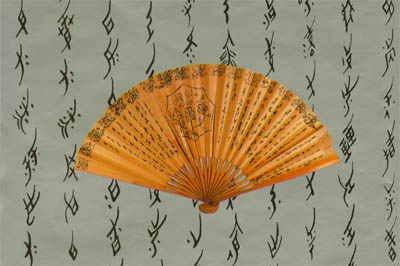
七、编 绣 妇女们常将带有吉利含义的成语，如“万事如意”、“吉星高照”等，用女字编成图案，编织在花带和服饰中，以示祝愿佩戴者吉祥之意。”
Translate with DeepL:
“Nushus are used mainly in the following ways:
- 1. Rituals The women of Shangjiang Wei believe in ‘King Mother-in-Law’. Before the establishment of New China, every year on the tenth day of the fifth month of the lunar calendar, they would go to the Temple of the King Mother-in-Law (also known as Huashan Temple) to worship the King Mother-in-Law. One of the important preparations before the festival was to write the prayers on paper or fans in Nushu, with their own good wishes and prayers for the elimination of calamities. On the day of the festival, the women bring the Nushu to the temple to read the paper and fan, and dedicate the paper and fan to the shrine of the temple.
- 2. Reading and Singing for Entertainment Before 1949, the custom of men ploughing and women weaving was maintained in the area of Shangjiang Wei. Women seldom participated in agricultural production and concentrated in groups of three to five in a room to do women's red, often while working and listening to people read and sing Nushu paper and fans. The most lively women's activities are the ‘Three Days of Fighting’ and the ‘Bullfighting Festival’. ‘On the third day after a girl's marriage, women sing and dance in the form of singing and dancing in a song hall, and enjoy reading and singing from the Sanchosu book, which is written in Nushu, which is a very lively event. ‘On the eighth day of the fourth month of the lunar calendar, women feed their cows with black rice and bring some food with them, and then gather together for a meal and to read and sing Nushus. In addition, reading and singing Nushus is also a favourite activity of local women who go to visit their relatives and their mothers' homes. Singing to the humorous place, the audience will laugh; sung to the sadness, everyone present in tears.
- 3. Correspondence Jiangyong territory of the young girls in the past very much like to sisterhood. After the two girls get acquainted with a good relationship, if one of them want to become a sister with another, generally will write or ask someone to write a letter on behalf of the Nushu to befriend each other, to his girlfriend to the other side, the content is most likely to promote each other. If the other person agrees to be married, she will ask her girlfriend to send her a letter in Nushu and invite her to her home. This kind of paper and fan written in Nushu actually became a token of friendship. When one of the sisters gets married, the other sisters present the bride with a letter of congratulations in Nushu, which is the most precious souvenir. Even if all the sisters get married, they still visit each other and read and sing together. Gao Yinxian, Yi Nianhua and Tang Baozhen are three members of the seven sisters who were sworn together when they were young. They are still very close to each other and read the Nushu together. When they want their sworn sisters or girlfriends to come to their homes, they often write an invitation letter in female characters. When a sister or a girlfriend suffers a misfortune, they write a letter of condolence in Nushu and send it to her in person or in person. Sisters or girlfriends sometimes have conflicts with each other, but also use the female characters to write letters to blame each other, ridicule, and even cursing. The messenger must be a woman, not a man.
- 4. Telling of one's life Elderly women around Shangjiang Wei, especially widows, would go to their girlfriends who were proficient in Nushu to complain about their problems after encountering natural or man-made disasters, or when they felt lonely, isolated and annoyed. This girlfriend would record her life's sufferings in Nushu while saying something to comfort her, and would write these words in her biography as well. In this way, these elderly women or widows gave vent to their heart's troubles in the form of complaining about their sufferings, and received a certain amount of emotional satisfaction in the form of listening to someone's consoling words. More importantly, they got a biography of their own, carry it with them, and then whenever they were lonely, isolated and troubled, they could take it out and read it or ask someone to read it on their behalf to seek spiritual comfort.
- 5 Remembering History Women often hear and see the major events in society or history, as well as the more prominent local characters, as Nushu material, written works, the formation of local historical information, become read paper to read the fan of the singing book. Such as ‘Taiping Heavenly Kingdom over Yongming’, describes the time and activities of the Taiping Army arrived at Jiangyong Shangjiang Wei. Liberation Song’ records the political movements in Shangjiang Wei from 1949 to 1958, such as “liberation”, “anti-hegemony”, “land reform”, ‘high society’, “people's commune” and so on. 6. Rewriting Chinese Rhymes Among the singsongs of Nushus, there is a large category of rewritten Chinese character rhymes, i.e., Chinese character rhymes translated into Nushus. The rewritten and translated Chinese rhymes are usually works with women as the main characters, such as ‘Liang Shanbo and Zhu Yingtai’, ‘Xiao's Daughter’, ‘Flower Seller’, and so on, to be read at any time.
7. Embroidery Women often weave idioms with auspicious meanings, such as ‘All is well’ and ‘Auspicious star shines high,’ into patterns with female characters, and weave them into flower belts and costumes to show that they wish the wearer good luck.’ ”
http://www.jiangyong.gov.cn/jiangyong/sqwh/201511/7199cc776bfb438e84345f82d7601e7a.shtml“The culture in the area was, like most of China, male-dominated for centuries, and women were not permitted an education. There was a tradition of “sworn sisters,” women who were not biologically related but who committed to friendship. In traditional Chinese marriage, exogamy was practiced: a bride joined her husband’s family, and would have to move, sometimes far away, not seeing her birth family again or only rarely. The new brides were thus under the control of their husbands and mothers-in-law after they married. Their names did not become part of genealogies.
Many of the Nushu writings are poetic, written in a structured style, and were written about marriage, including about the sorrow of separation. Other writings are letters from women to women, as they found, through this female-only script, a way to keep in communication with their female friends. Most express feelings and many are about sorrow and misfortune.”
https://www.thoughtco.com/nushu-woman-only-language-of-china-3529891 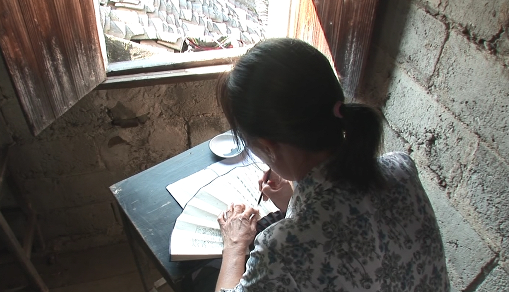 https://www.natgeomedia.com/history/article/content-9347.html“女书习俗
女书既是女性生活的一种隐秘形态，也是女性生活的一种精神寄托，由于女书在女性精神领域天长日久的浸染与渗透，形成了蕴涵深刻的女书习俗，包括做女红、结交老同、坐歌堂、贺三朝、哭嫁、斗牛、吹凉、祭祀姑婆等等。
一、做女红。女红也叫女工、女功，旧指妇女所从事的纺纱、织布、刺绣、缝纫等生产工艺活动，是自给自足经济生活条件下的女性分工。虽然女红成果的享用者属于全社会的成员，但女红的操作者基本上都是女性，男人不问津、不涉入，女红成了女性的封闭领地。旧时妇女没有学习文化的权利，却有着从小学习女红、终生从事女红的义务，她们把全部的智慧、才华都投入到女红中，把自己的心血、情感都融入女红中，特别是在操作女红、切磋技艺的过程中，女性结交女友、习唱女书，与女书文字的创造有着密切不可分的关系。“女子纺棉，每约邻为伴相巧拙，右手摇纺车，左手牵棉如丝，口中则歌声竟作。”形成了丰富而独特的女红女书文化。光绪《永明志》记载：“永明瑶女，织女纹花巾，制颇古质，又有瑶带，亦织成花纹，其瑶巾尤为洁白，细如西洋布。”在绣花织锦的过程中，女性把女字织进饰物中，并注入自己的情感，有的是几句吉祥句话语，有的则是作为图案的女字符号，这些女字在女性世界神奇地流传。
二、结老同。又称结老同，结老庚。同性之间结老庚，在中国是常见的人际现象，同年生人相结交，一般男的叫老庚，女的叫老同。在江永女书流传地区，妇女结老同的范围大大拓宽了，只要情投意合，无论年龄大小都可结拜姊妹，成为老同。结交的老同人数不等。一般根据年龄、经历，结交姊妹有婚前少女型和婚后中老年型，偶有忘年之交。这是一种非血缘关系的民间社团组织，是一种准结社现象。她们用自己的字写结交老同书，给老同写信，把老同的情义写成歌唱出来、传开去；写成书存在身边，伴随终生。女书使老同凝聚在一起，它不仅仅是一种妇女社交的工具，还是一种文化权力的象征。这种举世罕见的女性文字不仅使老同这种民间社团内成员之间的联系超越了时空，更使它得以升华，构建一个女性精神王国，创造着欢乐，稀释了泪水，分担着苦难。女性以女书、女歌、女红、女友（老同）为基本内容的乡土社会生活，维系姊妹的情谊，她们的感情虽不是夫妻之情却胜过夫妻之情。即使婚后夫妻和睦、感情浓烈，也不能与姐妹结交之情相提并论，当地流行这样的话：“丈夫面前不讲真，姊妹面前不讲假。”姊妹情感之牢固，由此可见。
三、坐歌堂、贺三朝。江永婚俗中女子出嫁前的“坐歌堂”和婚后第三天的“贺三朝”，所唱歌词在女书作品中占的比例相当高，是与女书紧密联系的风俗。女子出家前半个月，新娘的女性亲友就搬往进新娘家的绣楼上，陪伴新娘习女书、做女红、唱女歌，出嫁的前二三天还要举行隆重的歌堂仪式，由设歌堂、进歌堂、吵歌堂、坐歌堂、哭离乡歌组成，整个歌堂大唱女书歌。歌堂唱歌使用土话，歌词为七言句式，既有现编现词的即兴创作，也有事先用女书创作的备用歌谣，表现出女伴们对新娘的依恋不舍之情，流露出强烈的女性集体意识。新娘出嫁后第三天要回门，叫做三朝，亲戚朋友要给她祝贺三朝。这一天娘家的女性亲人和新娘婚前的女友要带着事先写好的三朝书等礼物到夫家唱《贺三朝》，然后把新娘子接回娘家，一般要到生了孩子才经常住在男方家，完成接三朝、贺三朝活动。三朝书主要用女书写上对新娘的祝福和对过去美好情谊的回忆，娘家亲戚朋友留恋女子，回忆过去的友情，恭喜女子嫁了个好人家，希望男方家放她早点回家，流露出女性姊妹之间的情真意切，有的甚至超过夫妻之间的感情，竟要从那新喜的家庭中夺回姊妹，新娘收到情深义重的三朝书越多越有面子、越珍贵。
四、女性节日。女性流行地区还有一些别具特色的习俗，使得妇女有更多机会回娘家或者到姐妹们那里欢聚，唱读女书。如二月初一祭鸟、四月初八斗牛、五月十六花山庙会、六月六日已嫁妇女回娘家过吹凉节等等，她们都要带上女书作品前往，相互的感情便日臻深厚，至死不忘。七月七日乞巧节，女子结伴在家门前设小桌，吟诵女书，乞求织女给以智慧和巧手，写出最好的女字和绣出最美的花饰。”
Translate with DeepL:
"Nushu Customs
Nushu is not only a hidden form of women's life, but also a kind of spiritual support for women's life. Due to the immersion and penetration of Nushu in the women's spiritual field over a long period of time, profound Nushu customs have been formed, including making women's honours, befriending old friends, sitting in the singing hall, congratulating the three dynasties, crying for marriage, fighting bulls, blowing cool, worshipping the auntie, and so on.
1. Doing women's honour. Women's red also called women's work, women's work, the old refers to women engaged in spinning, weaving, embroidery, sewing and other production activities, is a self-sufficient economic conditions of the female division of labour. Although the enjoyment of the fruits of women's honour belonged to all members of society, the operators of women's honour were basically women, and men did not ask for or get involved in it, so women's honour became a closed territory for women. In the old days, women did not have the right to learn culture, but have the right to learn from childhood, a lifelong obligation to engage in the female red, they put all the wisdom, talent are invested in the female red, their own heart and soul, emotions are integrated into the female red, especially in the operation of the female red, the process of cutting skills, women make girlfriends, learning to sing Nushus, and Nushu of the creation of text has a close and indistinguishable relationship. ‘Women spinning cotton, each about neighbours as companions to each other clumsy, the right hand shakes the spinning wheel, the left hand holds the cotton as silk, the mouth is singing even made.’ Formed a rich and unique culture of women's red Nushus. Guangxu ‘Yongming Zhi’ records: ‘Yongming Yao women, weaving women pattern flower scarf, the system is quite ancient quality, and there are Yao belt, also weaved into the pattern, its Yao scarf is especially white, fine as Western cloth.’ In the process of embroidery and brocade, women weave the female characters into the ornaments and inject their own emotions, some of which are a few words of auspicious sentences, and some of which are symbols of the female characters as patterns, which are magically passed on in the women's world.
2. Knot Lao Tong. It is also known as knot Lao Tong, knot Lao Geng. Jie Lao Geng between the same sex, in China is a common interpersonal phenomenon, the same year of life to befriend each other, generally called Lao Geng male, female called Lao Tong. In the Jiangyong Nushu circulating area, the scope of women's knot old with greatly broadened, as long as the love for each other, regardless of age can be twinning sisters, become old with. The number of old friends varies. Generally, according to age and experience, there are pre-marriage girl type and post-marriage middle-aged and old-aged type of sisterhood, and there are occasional friendships of forgetfulness. This is a kind of non-blood relationship civil society organisation, a kind of quasi-association phenomenon. They use their own words to write the book of befriending old friends, write letters to the old friends, and write the love of the old friends into songs and spread them out; they write a book to exist around them and accompany them throughout their lives. The Nushu brought the Lao Tong together, and it was not only a tool for women to socialise, but also a symbol of cultural power. This rare female script not only transcends time and space, but also sublimates the ties between members of the Lao Tong folk community, building a female spiritual kingdom that creates joy, dilutes tears and shares suffering. The rural social life of women, which is based on Nushus, women's songs, women's hong, and girlfriends (Lao Tong), maintains sisterhood, and their feelings, though not that of husband and wife, are better than those of husband and wife. Even if the husband and wife after marriage and strong feelings, but also can not be compared with the love of sisterhood, the local popular saying: ‘before the husband does not tell the truth, sisters do not tell the truth.’ The solidity of sisterly feelings can be seen.
3. sitting in the song hall, congratulations on the three dynasties. Jiangyong wedding customs before a woman gets married ‘sitting song hall’ and the third day after the wedding ‘congratulations on the three dynasties’, the lyrics sung in the works of Nushus accounted for a high proportion, is closely linked with the Nushu of customs. Half a month before the woman's departure, the bride's female relatives and friends moved into the bride's home embroidery, accompanied by the bride to learn Nushus, do women's red, singing women's songs, the first two or three days before the wedding, but also to hold a grand song hall ceremony, by the establishment of the song hall, into the song hall, the noise of the song hall, the song hall, sitting, crying song, the song hall singing Nushu songs. Song Hall singing using the vernacular, the lyrics for the seven sentence style, both improvisation of the words now made up, but also with the Nushu beforehand to create a spare ballad, showing the female companions of the bride's attachment to the feelings of reluctance to give up, revealing a strong sense of female collectivity. On the third day after her marriage, the bride returns to her family, which is called Sanchao, and her relatives and friends congratulate her on her third day. On this day, the female relatives of the bride's family and the bride's pre-wedding girlfriends to bring pre-written three Chao book and other gifts to the husband's family sing ‘He San Chao’, and then the bride to take back to the bride's family, generally until the birth of a child to often live in the man's home, complete to receive the three Chao, congratulations on the three Chao activities. Three Chao book mainly with female books written on the bride's blessings and memories of the past good friendship, the bride's relatives and friends to stay with the woman, reminiscing about the past friendship, congratulate the woman married a good family, I hope that the male family to put her home early, showing the love between female sisters, some even more than the husband and wife's feelings for each other, and even to recapture the sisterhood from the family of the newly happy, the bride received a deep and meaningful three Chao book the more the more face, the more precious. Face, the more precious.
4. women's festivals. Women's popularity of the region there are some unique customs, so that women have more opportunities to return to their families or to the sisters there to gather, singing and reading Nushus. Such as the first day of February bird sacrifice, the eighth of April bullfighting, May 16 Huashan Temple Fair, June 6 married women back to their parents' homes over the Blowing Cool Festival and so on, they have to take the Nushu works to go, mutual affection will become increasingly deep, to death. On the 7th day of the 7th month of July, the women set up a small table in front of their homes and recite the Nushu, begging the Weaving Maiden to give them the wisdom and dexterity to write the best Nushu and embroider the most beautiful flower decorations."
https://www.yzcity.gov.cn/cnyz/nswh/202211/96d9eeef3842451db02b4edf1521437a.shtml“义年华(1907一1991)，上江圩乡棠下村人。嫁到黄甲岭乡。她小时候家境比较好，读完了小学，能够背汉字书写的汉语古文“四书”“五经”，这为她学习女书和流利地书写女书提供了良好的条件。义年华14岁跟婶母学会女书。义年华的女书写作水平很高，她为许多人写传记，写三朝书，写女歌，还用女书翻译了很多汉字文本的作品。她的遗物中有其精心抄录的汉字文本的汉语唱本，这些唱本大概是准备用来翻译成女书文字的。女书是义年华的生命支柱，最后几年她写了很多女书作品，培养了一些女孩学习女书，帮助国内外不少研究女书的专家了解女书。义年华去世的时候陪葬埋的女书作品有近半尺厚。她的主要作品《义年华传世文》626句4382字。
高银仙(1902一1990)，上江圩乡高家人，出嫁到本乡的普美。她幼年家境贫寒，没有上学，不懂汉字记录的文化。她在家做姑娘的时候跟姑妈学女书，由于天资聪慧，女书学得很好。高银仙小时候听妇女们唱读女书的时候，觉得她们很可怜，也觉得女书内容很有道理，后来就开始跟姑姑以及其他姐妹学习女书。出嫁后，她在走亲戚的时候经常和原来一起学女书的姐妹们唱读女书。有空就把自己的心事写成女书。在20世纪60年代，高银仙跟6个朋友结交了姊妹关系。7个姊妹一般会读女书，只有3个人会写女书。后来高银仙还和义年华通过女书作品互相通信，互相慰问，成为朋友，结交了姊妹关系。结拜的姐妹关系非常亲密，甚至超过同胞亲生姐妹关系。她临终的时候自己分别挑选了一些女书烧掉，一些留下。高银仙的作品主要有《王氏女》《西施女》《卖花女》《梁祝姻缘》《咸丰年间走贼》等
阳焕宜(1905—2004)，上江圩乡阳家村人。她是最后一位女书自然传人，一生不懂汉字。她掌握的女书字比前面两位少，但是她是3位自然传人中最晚去世，最长寿的。她14岁学女书，大约学习了3年左右，后来附近有嫁女的就会请阳焕宜去写一些女歌、三朝书等，做成红包放在盒子里做嫁妆，显示新娘和娘家的才华。”
Translate with DeepL:
"Yi Nianhua (1907-1991), a native of Tongxia Village, Shangjiangxu Township. She married in Huangjialing Township. When she was a child, her family was well off and she finished primary school and was able to memorise the Four Books and the Five Classics, which were written in Chinese characters, which provided her with good conditions for learning and writing Nushu fluently. At the age of 14, she learnt to write Nushu from her aunt. Yi Nyenghwa's writing in Nushu was so good that she wrote biographies of many people, books on the three dynasties, women's songs, and translations of many works in Chinese characters in Nushu. Among her relics are her carefully transcribed Chinese chants of Chinese character texts, which were presumably prepared for translation into the Nushu. Nushu was a pillar of Yi Nianhua's life, and in her last years she wrote many works on Nushu, trained some girls to learn Nushu, and helped many experts on Nushu at home and abroad to understand Nushu. When Yi Nianhua died, she was buried with works of Nushu nearly half a foot thick. Her major work, Yi Nianhua's Passing Writings, consists of 626 sentences and 4,382 characters.
Gao Yinxian (1902-1990), a native of the Gao family in Shangjiangxu Township, was married to Phu Mei in this township. She was poor at an early age, did not go to school, and did not understand the culture recorded in Chinese characters. She learnt Nushu from her aunt when she was a girl at home, and due to her natural intelligence, she learnt Nushu very well. When Gao Yinxian was a child, she listened to the women singing and reading the Nushu and felt sorry for them, and also felt that the content of the Nushu made sense, so she later began to learn the Nushu from her aunt and other sisters. After she got married, she often sang and read the Nushu with her sisters who had learnt it together when she visited relatives. When she had time, she would write her thoughts in the Nushu. In the 1960s, Gao Yinxian formed a sisterhood with six friends, seven of whom could usually read Nushu, and only three of whom could write Nushu. Later, Gao Yinxian and Yi Nianhua also corresponded with each other through the works of Nushus, and became friends and made sisterhood ties. The sisterhood relationship was so close that it even exceeded that of fellow biological sisters. When she was dying, she selected some Nushus to be burnt and some to be left behind. Gao Yinxian's works include Wang's Daughter, Xishi's Daughter, Flower Seller's Daughter, The Marriage of Liang Zhu, and The Thief in the Xianfeng Years.
Yang Huanyi (1905-2004) was a native of Yangjia Village, Shangjiangxu Township. She was the last natural heir of the Nushu and did not know Chinese characters throughout her life. She mastered fewer characters of Nushu than the previous two, but she died the latest and lived the longest among the three natural heirs. She learnt Nushu at the age of 14, and studied for about 3 years. Later, if there was a marriage in the neighbourhood, Yang Huanyi would be asked to write some women's songs and Sanchao books, etc., which were made into red envelopes and put in a box as a dowry to show the bride's and her mother's family's talent."
https://www.yzcity.gov.cn/cnyz/nswh/202211/96d9eeef3842451db02b4edf1521437a.shtml“从自然传人到非自然传人。女书及女书文化的传承以家传式为主。而这时传承的性别特征开始模糊，男性开始涉及女书的传承和研究领域。如，原江永县文化馆工作人员周硕沂(1924—2006)，被众多学者和媒体称为女书男传第一人。他致力于女书研究达半个世纪，是第一个介绍和宣传女书的男性人物。学术界开始引导民众有意识地参与到女书及女书文化的抢救、保护和传承中来，并开始有教材，把几代人女书作者流传、改编和移植作品供传承人学习。江永县授予阳焕宜、何艳新、何静华、胡美月和义运娟5人“女书传人”称号。实际上，这5个人里面只有阳焕宜是自然形成传人，她获得这个称号一年后，在2004年就去世了，其他4人是有意培养的。可见，女书在被外界发现和关注的时候，在政府开始重视的时候，已经走到了生命的末期。2010年江永县又授予周慧娟、蒲丽娟和胡欣3人“女书传人”称号。2008年被评为国家非物质文化遗产省级女书习俗传人有2人：何静华，胡美月。21世纪初期有意培养的女书传人有：何静华、何艳新、周慧娟、胡美月、蒲丽娟、义运娟、胡欣。”
Translate with DeepL:
"From Natural to Unnatural Heirlooms. The inheritance of Nushus and Nushu culture is mainly in the family heirloom style. And at this time the gender characteristics of the transmission began to blur, and men began to be involved in the field of Nushu transmission and research. For example, Zhou Shuoyi (1924-2006), a former staff member of the Jiangyong County Cultural Centre, was known by many scholars and the media as the first man to pass on Nushu to men. He devoted himself to the study of Nushus for half a century and was the first male figure to introduce and publicise Nushus. Academics began to guide the public to consciously participate in the rescue, protection and inheritance of Nushus and Nushu culture, and began to have teaching materials to pass on, adapt and transplant works of several generations of Nushu authors for the inheritors to learn. Jiangyong County awarded Yang Huanyi, He Yanxin, He Jinghua, Hu Meiyue and Yi Yunjuan the title of ‘Women's Calligraphy Heirloom’. In fact, only Yang Huanyi was a natural heir, and she died in 2004, one year after receiving the title; the other four were intentionally trained. In 2010, Jiangyong County conferred the title of ‘Nushu Heirloom’ on Zhou Huijuan, Pu Lijuan, and Hu Xin, and in 2008, it was awarded the title of ‘Nushu Heirloom’ by the provincial Nushu heirloom of the National Intangible Cultural Heritage, which includes two Nushu heirlooms: He Jinghua and Hu Meiyue. In the early 21st century, the following Nushu masters have been trained: He Jinghua, He Yanxin, Zhou Huijuan, Hu Meiyue, Pu Lijuan, Yi Yunjuan, and Hu Xin."
https://www.yzcity.gov.cn/cnyz/nswh/202211/96d9eeef3842451db02b4edf1521437a.shtml“阳焕宜
女书传人。清宣统元年（1909）七月初二日出生于江永县上江圩乡阳家村,2004年9月20日去世，享年95岁。
父亲叫阳石养，从小跟祖母李树了学医，特别长于诊治小儿麻疹。在行医时常常听到许多农村妇女谈及女书，她们都是些有见识的妇女，就让阳焕宜也学女书。阳焕宜十四岁时与杨三三、杨栾栾、高银仙等五个人到葛覃村朱形之、兴福村义早早那儿学女书。当时学女书要交钱，每四百文钱教会一张纸（一首女歌），包括会唱会写。这样前前后后大约学习了三年左右，不是天天学，隔几天去学一次。后来附近有嫁女的便来请阳焕宜去写一些女歌三朝书，做红包放在抬盒里做嫁妆，显示新娘及娘家的才华。当地讨媳妇进门就要看媳妇的女书。女书在姑娘出嫁时相当重要。阳焕宜的父母去世很早。她有一个姐姐，很早就去世了。还有一个弟弟，在阳家村，七十七岁，叫阳牛兴，前几年也去世了。阳焕宜二十一岁嫁到新宅陈家，结婚只三个月，丈夫上山砍柴被毒蛇咬伤去世。两年后二十三岁时她改嫁到河渊何养正家。生了八个小孩，只剩下三个，两个儿，一个女。阳焕宜的丈夫爱赌钱，因此家里很穷，欠债很多，一年亏半年粮食。阳焕宜吃尽艰辛，把两个儿子拉扯成人。后来河渊村从上江墟乡改由铜山岭农场代管。上个世纪六十年代初，两个儿子都到铜山岭农场工作。阳焕宜就随儿子搬出河渊村，住在农场场部附近的职工宿舍。场部离河渊村2公里。但对“三寸金莲”的老人来说，回村和老姊妹相聚“唱纸唱扇”的机会越来越少。平日很少与人交流，只是自己写写女书、吟唱女书，聊以自娱。当我第一次见到老人时，她一下子拿出自己写的几本女书唱起来。”
Translate with DeepL:
“Yang Huan Yi
Heir to the female script. She was born on the second day of the seventh month in the first year of Xuantong in the Qing Dynasty (1909) in Yangjia Village, Shangjiangxu Township, Jiangyong County, and passed away on the 20th of September 2004 at the age of 95 years.
His father's name was Yang Shiyang, and he learnt medicine from his grandmother, Li Shuyue, and was especially good at diagnosing and treating paediatric measles. When he was practicing medicine, he often heard many rural women talk about Nushus, and as they were all knowledgeable women, he asked Yang Hanyi to learn Nushus as well. At the age of fourteen, Yang Hanyi and Yang San San, Yang Luan Luan, Gao Yin Xian and five others went to Ge Qin Village to learn women's studies in Zhu Shaped Zhi and Xing Fu Village. At that time, they had to pay money to learn female calligraphy, and every 400 cents taught them a piece of paper (a female song), including the ability to sing and write. They studied for about three years, not every day, but every few days. Later, when a daughter was married in the neighbourhood, Yang Huanyi was asked to write some female songs and put them in a red envelope in the box as dowry to show the talent of the bride and her family. In the local area, when a bride enters the house, she has to read the daughter-in-law's book. The book is very important when a girl gets married. Yang Huan Yi's parents died very young. She had an older sister who died at an early age. She also had a younger brother, a seventy-seven year old man named Yang Niuxing, who died a few years ago. At the age of twenty-one, Yang Hanyi married into the Chen family of Xinzhai, and after only three months of marriage, her husband was bitten by a poisonous snake when he went up the mountain to cut firewood. Two years later, at the age of twenty-three, she remarried to the He Yuan He Yangzheng family. She gave birth to eight children, of whom only three remain, two sons and a daughter. Yang Huan Yi's husband loved to gamble, so the family was very poor and owed a lot of money, losing half a year's worth of food. Yang Huan Yi had to work hard to bring up her two sons to adulthood. Later, He Yuan Village was transferred from Shang Jiang Hui Township to Tong Shan Ling Farm. In the early 1960s, both sons went to work at Tongshanling Farm. Yang Huanyi moved out of He Yuan village with her sons and lived in a staff dormitory near the farm's headquarters. The farm is 2 kilometres from He Yuan village. But for the ‘three-inch golden lotus’ old man, the opportunity to return to the village and old sisters to meet ‘singing paper singing fan’ is becoming less and less. She seldom communicates with others on weekdays, and only writes and sings Nushus for her own amusement. When I first met the old man, she immediately took out several books she had written and sang them.”
http://www.ahnmrw.com/m/hnmr/wyjmr/4498.html 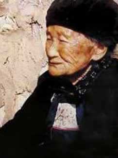 http://www.ahnmrw.com/m/hnmr/wyjmr/4498.html“亓京胜，男，1966年生，汉族，山东莱芜人。师从于甲骨文书法家张裕仁，女书文化宣传大使王成女士，女书发现者武汉大学博士生导师宫哲兵教授。”


Translate with DeepL:
“Jingsheng Qi, male, born in 1966, Han nationality, Shandong Laiwu people. Studied under the Oracle Bone Calligrapher Zhang Yuren, Women's Calligraphy Culture Promotion Ambassador Ms Wang Cheng, Women's Calligraphy Discoverer Wuhan University Doctoral Supervisor Professor Gong Zhebing.”
https://www.sohu.com/a/312862876_100118736“胡欣是个生活在湖南省江永县上江圩镇普美村的农家女孩。2000年，普美村开设女书学习班，召集当地的农家妇女利用周末闲暇时间学习女书，胡欣的母亲就是其中一名学员。当时，年仅12岁的胡欣便被这些造型奇特的文字吸引。出于好奇，她开始和母亲一同练习女书，但孩童时期的胡欣并没想到，自己今后会把传承女书文化作为毕生事业并以此为生。
2007年快毕业时，胡欣得知家乡女书生态博物馆的售票员嫌工资低，选择了外出务工，从小对女书文化耳濡目染的她便决心回到家乡的女书生态博物馆工作。简单的验票工作并没有阻碍胡欣的进步，反而让她有机会接触到更深层次的女书文化。“进入实际工作后我才发现，女书不只是能读会写那么简单，其实它的内容十分丰富，包括女字、女歌、女红、女书习俗等。习俗有婚嫁习俗、接待姐妹、斗牛节……还有很多女书作品，例如《三朝书》《哭嫁歌》《孟姜女》等。”胡欣说解释道。
在这段追寻女书的旅途中，胡欣一刻没有放松对自己的要求，有机会便向身边的老师请教，下班回家就开始自主练习女书书法、女工到深夜。受制于“母传女、老传少”的传承方式和“人死书焚”的习俗制约，女书流传到现在已经不通用了。“身边只有我一个人在学习，因此过程中难免会感到枯燥。”谈及学习女书的难关，胡欣说道，“学习女书的痛点是发音和用字。女书是表音文字，一个女书字可以代替很多汉字，且存在一字多义的情况。目前统计的常用字有400字左右，同样的字在不同的语境下时常会出现不同的意义。因此只能静下心，多下功夫，扎实地练习。”经过老师的悉心指导和自身的刻苦练习，2010年，胡欣通过考核，成为了目前最年轻的女书传承人。”
Translate with DeepL:
“Hu Xin is a peasant girl living in Pumei Village, Shangjiangxu Township, Jiangyong County, Hunan Province. 2000, Pumei Village opened a Nushu class, calling local peasant women to use their weekend leisure time to learn Nushu, and Hu Xin's mother was one of the students. At the age of 12, Hu Xin was attracted to the strange shapes of the characters. Out of curiosity, she began to practice Nushu with her mother, but as a child, Hu Xin did not realise that she would make her life's work and livelihood out of passing on the culture of Nushu.
When she graduated in 2007, Hu Xin learnt that the ticket sellers at her hometown's Nushu Eco-Museum chose to go out to work because of their low wages, so she decided to return to her hometown to work at the Nushu Eco-Museum after learning about Nushu culture from a young age. The simple job of checking tickets did not hinder Hu Xin's progress, but instead gave her the opportunity to get in touch with the deeper culture of Nushus. ‘After entering the actual work I realised that Nushu is not just as simple as being able to read and write, it is actually very rich in content, including Nushu, women's songs, women's red, Nushu customs and so on. Customs include marriage customs, reception of sisters, bullfighting festivals ...... There are also many works of Nushu, such as the Three Dynasties Book, the Crying Marriage Song, and Meng Jiangnu.’ Hu Xin said explained.
In this journey in pursuit of Nushus, Hu Xin did not relax for a moment on their own requirements, there is an opportunity to ask the teachers around them to teach, home from work began to independently practice women's calligraphy, women's work late into the night. Restricted by the ‘mother to daughter, old to young’ inheritance method and ‘people die book burning’ custom constraints, Nushu has been passed down to the present has not been generic. ‘I was the only one around me who was learning, so the process was inevitably boring.’ Talking about the difficulties of learning Nushu, Hu Xin said, ‘The pain point of learning Nushu is pronunciation and the use of words. Nushu is an epigraphic script, and one Nushu character can replace many Chinese characters, and there are cases of multiple meanings for one character. At present, there are about 400 commonly used characters, and the same character often has different meanings in different contexts. So you can only be quiet, put in more effort and practice solidly.’ After the teacher's careful guidance and her own hard practice, in 2010, Hu Xin passed the examination and became the current youngest inheritor of Nushu.”
Image of Hu Xin
https://news.qq.com/rain/a/20230412A030RG00 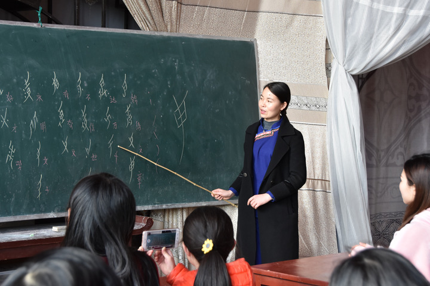在江永县蒲尾村女书园内，女书传人胡欣在教女书。新华每日电讯记者柳王敏摄
Translated with DeepL
Hu Xin, an heir to the Nushu, teaches the Nushu in the Nushu garden in Puwei Village, Jiangyong County. Photo taken by Xinhua Daily News reporter Liu Wangmin
http://www.news.cn/gongyi/20240511/1393ff56e2d34940a17b0e2c7875e93a/c.html 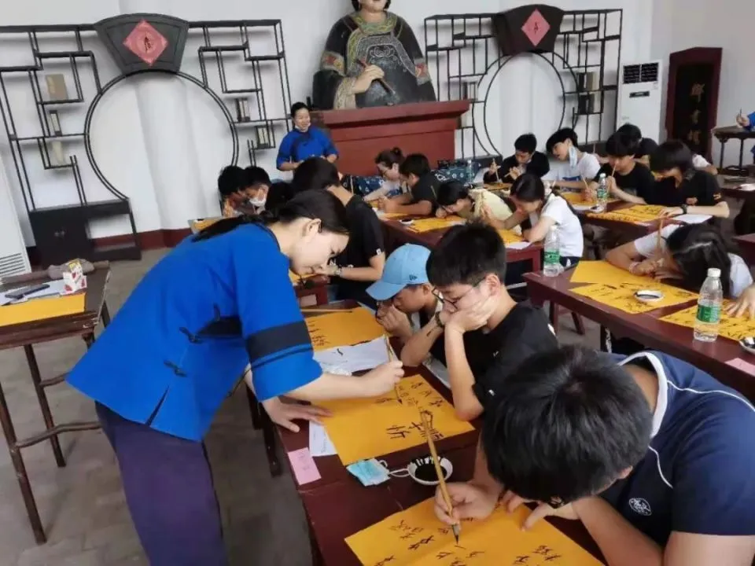在女书园博物馆，胡欣每个暑期都开班教授女书。
胡欣依然坚持每个暑期开班教授女书，学生有附近村子的女孩，也有不远千里而来的外乡人，甚至外国友人。“别小看外国人，他们用国际音标可以发出相当标准的音。”胡欣不知道其中哪个学生，未来会成为传承人，但她发自内心地希望，能有更多的年轻人一起守护、一起传承。
Translate with DeepL:
“At the Museum of Nushus, Hu Xin holds classes every summer to teach Nushus.
Hu Xin still insists on holding classes every summer to teach Nushu, and the students include girls from nearby villages, outsiders who come from thousands of miles away, and even foreigners. ‘Don't underestimate the foreigners, they can make quite a standard sound with the International Phonetic Alphabet.’ Hu Xin doesn't know which of the students will, in the future, become the inheritor, but she hopes from the bottom of her heart that more young people will guard and pass on the tradition together.
https://news.qq.com/rain/a/20230412A030RG00“Notable features
Type of writing system: syllabic
Writing direction: vertical columns running from top to bottom and from right to left.
Number of symbols: 600-700
Many Nüshu characters are based on Chinese characters, while some are modelled on embroidery stitches and designs.
Nüshu characters represent pronunciation, unlike Chinese characters, which represent pronunciation and meaning. One Nüshu character may be equivalent to one Chinese character, or to several.
Nüshu was taught to women by their mothers or grandmothers.”
https://www.omniglot.com/writing/nushu.htm“While sometimes characterized as a language, it might better be considered a script, as the underlying language was the same local dialect used also by the men in the area, and usually by the men written in Hanzi characters. Nushu, like other Chinese characters, is written in columns, with characters running from top to bottom in each column and columns written from the right to the left. Chinese researchers count between 1000 and 1500 characters in the script, including variants for the same pronunciation and function; Orie Endo (below) has concluded that there are about 550 distinct characters in the script. Chinese characters are usually ideograms (representing ideas or words); Nushu characters are mostly phonograms (representing sounds) with some ideograms. Four types of strokes make u the characters: dots, horizontals, verticals and arcs.”
https://www.thoughtco.com/nushu-woman-only-language-of-china-3529891Proposal for Encoding Nushu in the SMP of the UCS
(A pdf introducing Nushu)
https://unicode.org/wg2/docs/n3598.pdf 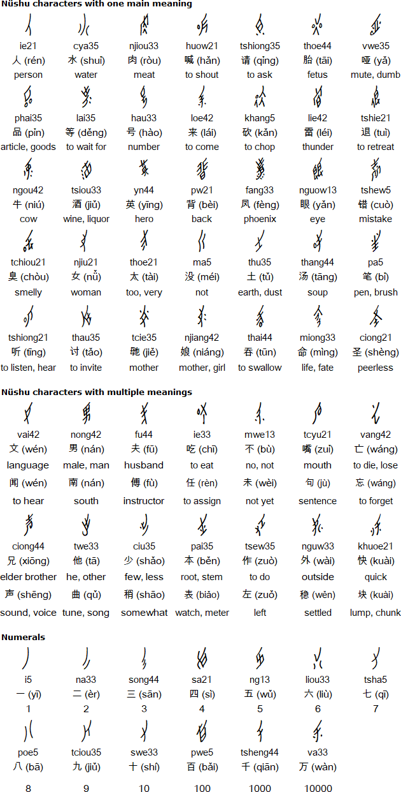 https://www.omniglot.com/writing/nushu.htm“女书实际上只有三种基本笔法：圆点、圆圈和弧形线条。与方块汉字的笔画相比，女书的弧笔很有特色，在书写中弧度可大可小、弧线可长可短，变化多端。女书几乎所有的线条都是弧形，无所谓横，也无所谓竖。似撇者，锋芒毕露，常为全字之首；似捺者，伸而无磔笔；似竖，躬而不直；似横，倾而不平。女书特有的圆圈，常常也是由两条弧线合拢而成，形成上、下不拢口的椭圆形，形如枣状。所谓折笔，也是由两笔弧线交结而成。女书中几乎没有由下而下的挑提之笔。
女书清秀的体形、纤细的笔画、巧妙的结构展现出一种独特的艺术美。女书字形具有形式美，字形刚柔相济，柔中有刚，灵动娟秀，轻盈飘逸，充满了律动感。同时，还不自觉地利用了对称美的规律，创造出了大量对称的象形文字。它可将不同形态表达出来，文字四角平稳，尽量周正的美感。
总的来看，女书书法以其弧形美最著魅力，有的似水波，有的似上弦月，书写弦线，多在每个字的开笔。一个字不论有多少条弧线组成，第一条弧线往往是起栋梁骨干作用的，其余短弧、点、圆再依次完成。”
Translate with DeepL:
“Nushu actually has only three basic strokes: dots, circles and arc lines. Compared with the strokes of the square Chinese characters, the curved strokes of Women's Calligraphy are very distinctive, and in writing the arcs can be large or small, and the arcs can be long or short, with many variations. Almost all the lines in Nushu are curved, and it does not matter whether they are horizontal or vertical. Those who are like the apostrophe are sharp and often the first of the whole character; those who are like the downward stroke are stretching without tearing off their limbs; those who are like the vertical stroke are bowing but not straight; and those who are like the horizontal stroke are tilting but not flat. The characteristic circle of Nushu is often made of two curved lines, forming an oval shape that is not close to the mouth at the top and the bottom, which is shaped like a jujube. The so-called folding strokes are also formed by the intersection of two arcs. There are almost no strokes of picking and lifting from the bottom in the Nushu.
The elegant shape, slender strokes and ingenious structure of Women's Calligraphy show a unique artistic beauty. Nushu characters have the beauty of form, the characters are rigid and flexible, soft and strong, dynamic and graceful, light and elegant, and full of rhythmic movement. At the same time, it also unconsciously makes use of the law of symmetry and creates a large number of symmetrical hieroglyphic characters. It can express different forms, and the characters are smooth in all corners and as circumscribed as possible in beauty.
Generally speaking, women's calligraphy is most charming with its arcs of beauty, some of which resemble water waves, some of which resemble the moon on the upper strings, and the writing strings, mostly in the opening strokes of each character. No matter how many arcs a word consists of, the first arc is often the backbone of the role of the pillar, the rest of the short arcs, dots, circles and then completed in turn.”
https://www.yzcity.gov.cn/cnyz/nswh/202211/96d9eeef3842451db02b4edf1521437a.shtml“大多数女书研究专家学者认为，女书的自然属性是汉字，是从汉字派生出来的，但在本质属性上与方块汉字不同。首先，女书属于表音的单音节文字。在汉字中，一个音节往往用许多不同的字书写，每一个字表示不同的意义，属于表意文字，而女书则不同，女书同一个音节中可以只用一个字书写，就能表示许多毫不相关的意义。其次，女书的构件基本没有表意成份和意义功能。女书字的构件，有的与方块汉字的部件相似，可能是从方块汉字借鉴而来；有的则来源不明，有待进一步考察研究。在女书中，即使具有相同构件偏旁的一组字，彼此之间也没有任何意义上的关系，每个单字也不能从构字部件上得到任何意义上的提示，没有表意功能，不是表意文字。相反，女书的某些构件或单字带有音符性质，具有表音功能。
将构件简单组合，制造新字形成字族，是女书造字的主要手段。汉字里有许多偏旁，同一偏旁统摄下包含许多汉字，它们的读音彼此无关，但是意义有相同或者相关之处，是一种以语义为联系的字族。女书字则不同，同族的字以共用的基字为核心，语义彼此无关，但读音共有共之处，是一种以语音为联系的字族。这样的字族在女书中大约有130多个。
用一个字符标记一组同音（近音）的词，是女书字标记语言的主要手段，也是它经济简便之处。赵丽明博士曾经做过统计分析：《汉语大字典》收录了54678个汉字，常用汉字有数千个。而所有这些字用女书来表达，却只需2000个字，常用字少到只有700字左右。而且，无论社会发展出现什么新事物、新词汇，女书都无需再造新字，只要用读音来表示即可，像计算机、克隆技术、宇宙飞船等现代词语，凭老布帛的女书完全可以记录。
由于女书是一种民间文字，造字者众多，又没有经过规范整理，还不是很标准的音节书写。标准的音节文字一个音节由一个字符书写，一个字也只记录一个音节，而女书则有一字多形、言多字、一字多音现象。
也有论者认为，女书既非表音文字，也非表意文字，而是走的“第三条文字发展道路”，即是一种记号音节文字。女书，不仅绝大一部分一形多音，而且也大量存在着一音多形、同音字现象甚为普遍。女书字符与语音之间的关系缺乏固定性和一致性，同形不一定同音（如多音字），同音不一定同形（如同音字）。女书符号标记的音义之间，大部分没有直接联系，纯粹约定俗成的，没有规律性的形式标志。即一个字符纯属约定俗成的、标记一定音义的记号性符号，不是表音文字，而是一种举世罕见的记号音节文字。”
Translate with DeepL:
“Most experts and scholars in the study of Nushu believe that the natural attributes of Nushu are Chinese characters, which are derived from Chinese characters, but are different from the square Chinese characters in their essential attributes. First of all, Nushu belongs to the monosyllabic script of epigraphy. Unlike Chinese characters, in which a syllable is often written with many different characters, each of which represents a different meaning, and which are ideographic characters, Nushu can represent many unrelated meanings by using only one character for the same syllable. Secondly, the components of the female script are basically devoid of ideograms and meaning. Some of the components of Nushu characters are similar to those of the square Chinese characters, so they may have been borrowed from the square Chinese characters, while others are of unknown origin and need to be further investigated and researched. In Nüshu, even a group of characters with the same radicals do not have any meaningful relationship with each other, and each single character cannot get any meaningful hints from the components of the radicals, so they do not have any ideological function and are not ideographs. On the contrary, some of the components or single characters of the Nushu are phonetic in nature and have an epigraphic function.
Simple combinations of components to create new characters to form character families are the main means of character creation in Nüshu. In Chinese characters, there are many radicals, and the same radicals are used as a basis for many Chinese characters, which are not related to each other in terms of pronunciation, but have the same or related meanings, making them a kind of semantically related character family. In contrast, the characters of Nüshu have a common base character as their core, and their semantic meanings are unrelated to each other, but their readings have something in common with each other, so they are a kind of phonetically related character family. There are more than 130 such character families in Nüshu.
The use of one character to mark a group of homophonic (near-sound) words is the main means of marking language in Nüshu, and it is also economical and simple. Dr Zhao Liming once did a statistical analysis: The Hanyu Da Zidian contains 54,678 Chinese characters, and there are thousands of commonly used characters. And all these characters are expressed in Nushu with only 2,000 characters, and the commonly used characters are as few as only about 700 characters. Moreover, no matter what new things and new vocabularies appear in the development of the society, the Nushu does not need to create new words, as long as they are expressed by reading sounds, and modern words such as computers, cloning technology, and spaceships can be completely recorded by the Nushu on old cloth and silk.
As the Nushu is a kind of folk script, there are many word makers, and has not been standardised and collated, it is not yet a very standard syllabic writing. Standard syllabic writing a syllable written by a character, a word is also recorded only one syllable, while the Nushu has a word with multiple shapes, words with multiple words, a word with multiple sounds phenomenon.
Some commentators believe that Nushu is neither an epigraphic nor an ideographic script, but rather follows the ‘third path of script development’, i.e., it is a kind of notated syllabic script. Not only does a large part of the female script have more than one form and more than one sound, but also a large number of characters with more than one sound, and the phenomenon of homophonic characters is very common. The relationship between the characters of Nushu and speech lacks fixity and consistency; the same shape is not necessarily the same sound (such as polyphonic characters), and the same sound is not necessarily the same shape (such as homophonic characters). Between the sounds and meanings marked by the symbols of the Nushu, most of them have no direct connection and are purely conventional, with no regularity of form marking. That is, a character is purely conventional, marking a certain sound and meaning of the mnemonic symbols, is not an epigraphic text, but a world-rare mnemonic syllabic text.”
https://baike.baidu.com/reference/608945/533aYdO6cr3_z3kATPSNnqjyMyrMN4ir7b3bVONzzqIP0XOpUpqrQ5Ix6cMmsPBoAkXIvtdhbs8P2ea5TRNa7PcSc-w0XbwkyX-qBmaUyrbi_d00m4UWo4gRXPhD0fD0tEX40STbx_ON8mC_“女书的本质上属于音节表音文字，一个字基本上记录一个音节。女书是汉语记录历史上的一个文字奇迹，可以认为是比反切更加简单的最早的汉语拼音。
女书的外表特点是字的整体轮廓呈现长菱形，笔迹秀丽娟细，造型独特，所以也被叫作“长脚蚊”。搜集到的字将近2000个，但是去掉异体字和错别字，实际使用的字只有大约600个。记录的是当地方言的“土话”，也就是用“土话”朗读或者吟唱。江永土话又五花八门，从声调就有4个、5个、6个、7个的不同。女书流行的上江圩镇是6个声调，县城是7个声调。因为由于湘语永全片难懂，分歧大，只在局部乡村流行，当地还通行从广西引进的官话。江永全县的官话就非常一致，官话只有4个声调。”
Translate with DeepL:
“The female script is essentially a syllabic epigraphic script, with one character essentially recording one syllable. Female script is a textual miracle in the recorded history of the Chinese language, and can be considered the earliest form of Hanyu Pinyin that is simpler than antiche.
The appearance of the female script is characterised by the long rhombus shape of the characters, the beautiful and delicate handwriting, and the unique shape, which is why it is also called the ‘mosquito with long feet’. Nearly 2,000 characters have been collected, but only about 600 characters are actually used, excluding variant characters and misspelled words. The words are recorded in the local dialect, which means that they are read aloud or sung in the local dialect. The Jiangyong dialect is very diverse, with four, five, six and seven different tones. In the town of Shangjiang Wei, where Nushus are popular, there are 6 tones, and in the county town, there are 7 tones. Because the Xiang Yong Quan piece is difficult to understand and divergent, it is only popular in local villages, and the local official language introduced from Guangxi is also in use. The official language of the whole county of Jiangyong is then very consistent, and the official language has only 4 tones.”
https://baike.baidu.com/item/%E5%A5%B3%E4%B9%A6/608945#reference-7“女书的字来自部分简单的汉字，而且做了许多简化和改造。笔画简化成点、直线和弧线3种。根据湖南师范大学语言学者彭泽润教授研究，女书改造汉字的目标和方式如下：
改造汉字的目标
1．整体倾斜。通过整体倾斜，形成菱形结构。例如“口”变成了“？”。几乎都可以向左边倾斜，少数字还可以向右边倾斜。
2．改造成圆点笔画。把本来就短小或者次要的笔画改造成点，而且是圆点。例如“火”字“人”以外原来有一定长度的两个点改变成圆点。有时把次要线条笔画变成点，例如“正”，把其中“工”以外的两个笔画变成点。极端的例子是“亥”，整个字就是4个点构成，点分别安放在“？”空间的4个角的位置。
3．改造成匀称的线条笔画。第一，把原来水平和垂直的笔画保留少量减少长度的“横”和“竖”，其余改造成倾斜的长线条，形成“斜”，分成“撇斜”和“捺斜”两种直线笔画，例如“井”的横变撇斜，其余变捺斜。斜线笔画，取消原来“提”和“横”的书写方向，一律采用原来“撇”和“捺”的书写方向。第二，把笔画大小变化取消，一律写成大小一致的线条，有的改造成直线，例如“大”中的“人”，有的改造成弧线，主要变成“左弧”和“右狐”，例如“八”和“个”中的“人”。
改造汉字的方式
1．分解和合并。把转折的线条笔画分解或者合并。有的在转折位置分解成不同笔画，例如“口”原来是3笔，女书分解成4笔，写成笔画连接的“？”；同样“又”原来是2笔，在女书中写成3笔。有的简化成弧线，例如“口”也可以写成从左右包围的两个弧线，好像粘贴成圆圈的一对括号“（）”，实际形状像字母“o”，但是要分成2个笔画写。带钩的笔画也这样分别处理，有的直接删除钩，例如“小”中间删除钩以后变成左斜，“七”中的“乚”删除钩以后改变方向写成左弧，形状像“）”，但是“必”中的“乚”写成两笔，形状像“v”。
2．延长和缩短。为了加大跟原来字形的区别，有的延长笔画，例如“山”中间的“丨”突破包围，向下面延长，写成“屮”的样子；有的缩短笔画，例如“曰”的右边的“丨”缩短到下面一半，形成“6”的样子。
3．增加和减少。为了加大跟原来字形的区别，有的增加笔画，例如“中”增加笔画横，变成“申”的样子；有的减少笔画，例如“手”减少笔画横，变成“于”的样子。更多的是减少结构复杂的汉字的部件，例如“炭”减少上边的“山”，其余部份变成了“木+十”的上下结构。“非”左右都有的3横，减少成一个圆点代替。“声”采用俗体字，删除了繁体字“声”的大部分，只留下左上角。
4．转向和转移。无论是笔画还是部件都可以改变结构位置。有的笔画通过改变拐弯方向来改变位置，例如“七”中的“乚”写成拐弯方向相反的左弧线条。更多的是通过转移的方式改变位置，例如“下”把“丨”转移到左下角再跟倾斜的横连接成“v”的样子，整个字像“v？”的样子。部件转移位置的，例如“油”把左边的“氵”改变成平行的3个圆点以后转移到“由”的下面。
5．类化后重复。原来是两个不同部件的复合字，选择一个部件原形或者进一步简化以后的形体，同时用它代替另外一个部件，构成相同部件符合的字，例如“各”写成两个“攵”上下结构的字，“明”写成两个去掉里面两横的“月”上下结构的字。
6．附加部件。附加符号一般表示声调、送气等具有强类化作用的语音特征。在“分”的左边附件小圆圈表示“魂”，从而从记录阴平音节变成记录阳平音节。对“包”这样处理可以记录“饱”这个上声音节。”
Translate with DeepL:
“The characters of Nushu come from partly simple Chinese characters and have been simplified and transformed in many ways. The strokes were simplified into 3 types: dots, straight lines and arcs. According to the research of Professor Peng Zerun, a language scholar at Hunan Normal University, the goals and ways of transforming Chinese characters in Nushu are as follows:
Objectives of transforming Chinese characters
1. Overall tilt. By tilting the whole character, a diamond-shaped structure is formed. For example, ‘口’ has become ‘?’ . Almost all characters can be tilted to the left, and a few can be tilted to the right.
2. Transforming into dot strokes. To convert the short or minor strokes into dots, which are rounded. For example, the word ‘fire’, ‘people’ outside the original length of the two dots into dots. Sometimes the secondary line strokes are turned into dots, as in the case of ‘正’, where the two strokes other than ‘工’ are turned into dots. An extreme example is ‘亥’, where the whole character is made up of 4 dots, which are placed at the 4 corners of the ‘?’ space. The dots are placed at the four corners of the space.
3. Transform into even line strokes. Firstly, the original horizontal and vertical strokes are retained in a small number of reduced length ‘horizontal’ and ‘vertical’, and the rest are transformed into long inclined lines to form ‘diagonal’, which are divided into The two types of linear strokes, ‘oblique’ and ‘oblique’, for example, the horizontal of ‘井’ becomes oblique, and the rest becomes oblique. For diagonal strokes, the original writing directions of ‘提’ and ‘横’ are cancelled, and the original writing directions of ‘撇’ and ‘捺’ are adopted. ‘Secondly, the change of stroke size is cancelled. Secondly, the size of the strokes is cancelled, and all of them are written as lines of the same size; some of them are transformed into straight lines, such as ‘人’ in ‘大’, and some of them are transformed into arcs, which are mainly transformed into ‘左弧 Some were transformed into straight lines, such as ‘人’ in ‘八’ and ‘个’, while others were transformed into arcs, mainly into ‘左弧’ and ‘右狐’, such as ‘人’ in ‘八’ and ‘个’.
Ways of transforming Chinese characters
1. Break up and merge. Break down or merge the strokes of the lines that turn. For example, ‘口’ (mouth) has three strokes, but the female script breaks it down into four strokes and writes it as ‘?’ (?); similarly, ‘又’ (又) has three strokes. For example, ‘口’ (mouth) is originally 3 strokes, which is broken down into 4 strokes and written as ‘? Some of them are simplified into arcs, for example, ‘口’ can also be written as two arcs surrounded by two arcs from the left and right, like a pair of brackets ‘()’ pasted into a circle, which is actually shaped like the letter ‘o’, but it has to be written in two strokes. The actual shape is like the letter ‘o’, but it has to be written in two separate strokes. Strokes with hooks are also handled separately in this way, some directly delete the hook, for example, ‘small’ in the middle of the deleted hook after the left oblique, ‘乚’ in ‘七’ after the deletion of the hook to change the direction of the left arc, shaped like ‘’ (). The ‘乚’ in ‘七’, after deleting the hook, changes direction and is written as a left arc, which is shaped like ‘)’, but the ‘乚’ in ‘必’, which is written as two strokes, is shaped like a ‘v’.
2. Lengthening and shortening. In order to increase the difference between the original character shape and the original one, some strokes are lengthened, for example, the ‘丨’ in the middle of ‘山’ breaks through the encirclement and extends downwards, making it look like ‘屮’, while others are shortened, for example, ‘曰’, which is a Chinese character. For example, the ‘丨’ on the right side of ‘曰’ is shortened to half of the lower part of the character, forming the character ‘6’.
3. Increase and decrease. In order to increase the difference between the original character form and the original one, some increase the number of strokes, for example, ‘中’ increases the number of strokes across and becomes ‘申’; some decrease the number of strokes, for example, ‘手’ decreases the number of strokes across and becomes ‘于’. Some reduce the number of strokes, for example, ‘手’ reduces the number of horizontal strokes and becomes ‘于’. More often, the components of complex characters are reduced, for example, ‘炭’ reduces the upper part of the character ‘山’ and the rest of the character becomes the upper and lower parts of the character ‘木+十’. For example, ‘非’, the three horizontal characters on both the left and right sides of the character have been reduced to a dot instead. The Chinese character ‘声’ was adopted from the traditional Chinese character ‘声’, and most of the traditional Chinese character ‘声’ was deleted, leaving only the upper-left corner of the character.
4. Turning and shifting. Both strokes and parts can change their structural position. Some strokes change position by changing the direction of inflection, for example, the ‘乚’ in ‘七’ is written as a left curved line with an opposite direction of inflection. More often, the position is changed by shifting, for example, in ‘下’, the ‘丨’ is shifted to the lower left corner and then joined with the tilted horizontal to form a ‘v’, so that the whole character resembles a ‘v? The whole character looks like ‘v?’. For example, ‘油’ changes the left ‘氵’ into three parallel dots and then transfers it to the bottom of ‘由’.
5. Repetition after analogy. The original is two different parts of the composite word, choose a part of the original form or further simplify the form, and at the same time use it to replace another part, constitute the same parts of the word in line with the word, for example, ‘each’ is written as two ‘攵’ up and down the structure of the word, ‘Ming’ is written as two ‘攵’ up and down the structure of the word, ‘氵’. For example, ‘各’ is written as two characters of ‘攵’ and ‘明’ is written as two characters of ‘月’ and ‘月’ with two crosses removed.
6. Additional components. Additional symbols generally represent phonetic features such as tones and affricates that have a strong classifying effect. The small circle to the left of ‘分’ indicates ‘魂’ (soul), which changes from recording yin-flat syllables to recording yang-flat syllables. This treatment of ‘包’ allows for the recording of ‘饱’, a supraphonic syllable.”
https://baike.baidu.com/item/%E5%A5%B3%E4%B9%A6/608945#reference-7“女书一般写在纸、书、扇、手巾、布带等物品上。书写女字的纸张有白纸、红纸和黄纸。白纸比较薄，单面书写，对折后形成一页，可以装订保存；红纸有单面和双面两种，多用于书写喜庆内容；黄纸用来写祭文，要当场焚烧。后来，也有人用小学生的练习本写女字。写在扇子上的女书，通常比较简短，如《十绣歌》等。写在手巾和布带上的女书，一般先写再绣，边绣花边装饰。
此外，1993年在南京收集到19世纪中期太平天国的一个金属货币，一面写着汉字“天国圣宝”，另一面写着汉字“炎壹”，同时在两边分别写有女书内容“天下妇女”和“姊妹一家”。
2006年，有人在东安县芦洪市镇一座建自宋代、距今已有800多年历史的石拱桥一角，发现了一块女书残碑，进一步扩大了人们对女书载体的认识。
无论哪种承载方式，女书都十分讲究形式美。如写在纸张上的女书四角多配花纹，写于纸扇上的女书多插绘花鸟图案，而织绣在巾帕花带和服饰上的女书则是精美的女红工艺品。虽然载体不同，但女书字体整体造型都清秀而有条理，犹如女性婀娜的身姿，具有阴柔的美感。”
Translated with DeepL:
“Nushu is usually written on items such as paper, books, fans, hand towels and cloth ribbons. The paper used for writing Nushu includes white, red and yellow paper. White paper is relatively thin, written on one side and folded to form a page that can be bound and preserved; red paper, which has both single and double sides, is mostly used for writing festive content; yellow paper is used for writing rituals and is to be burned on the spot. Later, some people also used the exercise books of primary school students to write Nushu. Nushu written on fans is usually shorter, such as the Ten Embroidery Songs. Nushu written on handkerchiefs and cloth ribbons is usually written and then embroidered, and decorated with flowers as they are embroidered.
In addition, a metal currency of the Taiping Heavenly Kingdom from the middle of the 19th century was collected in Nanjing in 1993, with the Chinese characters ‘Tian Guo Sheng Bao’ written on one side and ‘Yan Yi’ written on the other, and the contents of the Nushu written on both sides respectively. ‘Women of the world’ and “Sisters of the family” are written on both sides.
In 2006, a remnant of a Nushu tablet was found in a corner of a stone arch bridge built in the Song Dynasty in Luhong Township, Dong'an County, more than 800 years ago, further expanding people's understanding of the carrier of Nushu.
Regardless of the type of carrier, Nushu is very concerned about the beauty of form. Such as written on paper, Nushu corners with more patterns, written on paper fan Nushu more illustrated bird and flower patterns, and embroidered in the scarf and flower belt and clothing on the Nushu is a beautiful women's red handicrafts. Although the carrier is different, but the overall shape of the Nushu font are clear and organised, like a woman's graceful posture, with a feminine beauty.”
https://www.yzcity.gov.cn/cnyz/nswh/202211/96d9eeef3842451db02b4edf1521437a.shtml“女书是在江永上江圩一带妇女中神秘流传的一种妇女文字传播符号，其创作、使用、传播都是普通女性，以“传女不传男、老传少、母传女”的方式代代相传。女书的传承是无体系、无教材、非正规教师的自发传播行为，只在女性间由母传女、老传少、同辈间相互交流研习。
女书传人有自然传人和从自然传人到非自然传人两个阶段。
从民国初期到21世纪初最后一位女书自然传承人阳焕宜老人去世，江永县上江圩镇女书传承人就有82位。这些女书自然传人基本上都是文盲，没受汉字的影响，其传承关系完全是女性自发参与的原生态传承。妇女之间，通过家族、亲戚、朋友、长辈或女书文化习俗等活动，口头传承。传者口唱，承者聆听、模仿再现，最后都会认女字、会唱女书歌。”
Translate with DeepL:
“The Nushu is a symbol of women's written communication that has been mysteriously passed down among the women of Jiangyong's Shangjiangxu area, and its creation, use and dissemination have all been passed down from one generation to the next by ordinary women in the manner of ‘passing on from woman to woman but not from man to man, from the old to the young, and from mother to daughter’. The inheritance of Nushu is a spontaneous act of dissemination without any system, teaching materials or informal teachers, and it is only passed on from mother to daughter, from old to young, and from peer to peer.
There are two stages of transmission: natural and unnatural.
From the early Republic of China to the death of Yang Huanyi, the last natural heir of the Nushu in the early 21st century, there were 82 Nushu heirs in Shangjiangxu Township, Jiangyong County. These natural inheritors of the Nushu were basically illiterate and were not influenced by Chinese characters, and their inheritance relationship was entirely an original ecological inheritance in which women participated spontaneously. It is passed on orally among women through family, relatives, friends, elders or activities such as the cultural customs of Nushu. The transmitter sings orally, and the transmitter listens, imitates and reproduces, and eventually all of them can recognise Nushu and sing Nushu songs.”
https://www.yzcity.gov.cn/cnyz/nswh/202211/96d9eeef3842451db02b4edf1521437a.shtml 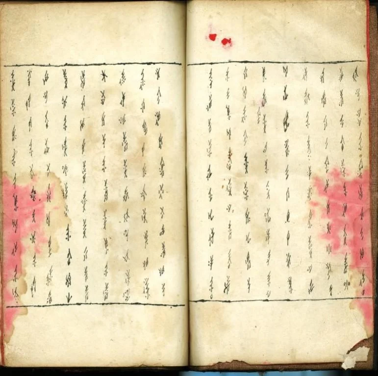三朝书扉页为红纸，后有三张内页，由新娘的闺密书写赠送，让夫家村妇公开唱颂。图片来源│刘斐玟
The title page of the book of the three dynasties is red paper, followed by three inner pages, which are written and presented by the bride's bosom friend for the husband's village women to sing their praises in public. Image source│Liu Fei Min (Translated with DeepL)
https://research.sinica.edu.tw/nushu-female-characters-chinese/ 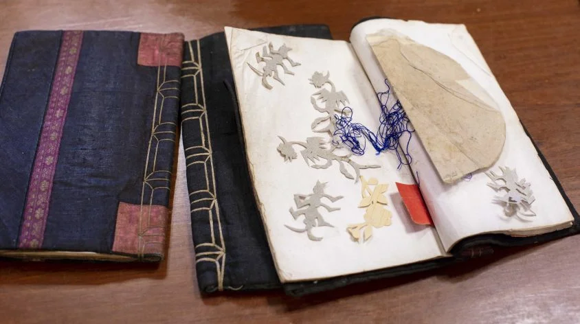三朝书里经常夹着妇女刺绣的花样图形，书衣皆为手工缝制，是传统农村精装本。摄影│林洵安
The books of the Three Dynasties are often interspersed with patterned graphics embroidered by women, and the book jackets are all hand-stitched in a traditional rural hardcover. Photograph│Lin Xunan (Translated with DeepL)
https://research.sinica.edu.tw/nushu-female-characters-chinese/ 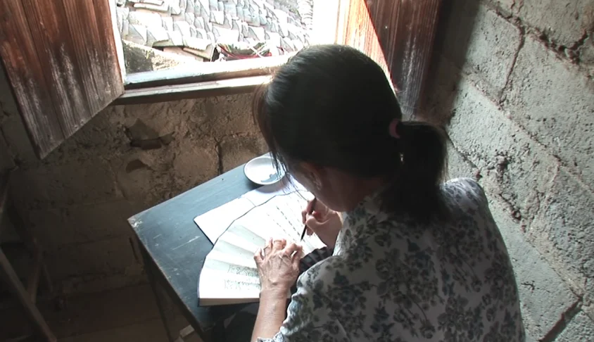江永女子将女书写在折扇或手帕上，与闺密姊妹交换。图片来源│取自纪录片《女书回生》画面
Jiangyong women write Nushus on folding fans or handkerchiefs and exchange them with their girlfriends and sisters. Image source│Taken from the documentary film ‘The Return of the Nushu’. (Translated with DeepL)
https://research.sinica.edu.tw/nushu-female-characters-chinese/
| Cantonese | Mandarin | Translated with DeepL |
|
何豔新母親的三朝書 自坐樓中妹寫信 看察細姑在他門 恭賀縫房千般好 步步高升勝過人 前朝叔娘交叙你 不比四邊五色全 來望親情誼寬大 只是聽言要緊包 細姑你邊一世好 夜點明燈滿堂紅 正好時來將九月 十六團圓透夜光 百花休再轉青光 自以分開不同坐 幾日淚流到三朝 氣日慣身是錯度 剛好老成沒在家 |
何艳新母亲的三朝书 自坐楼中妹写信 看察细姑在他门 恭贺缝房千般好 步步高升胜过人 前朝叔娘交叙你 不比四边五色全 来望亲情谊宽大 只是听言要紧包 细姑你边一世好 夜点明灯满堂红 正好时来将九月 十六团圆透夜光 百花休再转青光 自以分开不同坐 几日泪流到三朝 气日惯身是错度 刚好老成没在家 |
The 'San Chao Shu' of He Yanxin's Mother I'm writing a letter from my sister in a building. 'I see that my sister-in-law is at his door. I congratulate you on your sewing room You'll rise higher than anyone else. 'Auntie told me about you in the past. You're no better than all the colours. I've come to look for love and affection. Just listen to the words and take care of them. 'Auntie, you'll be good for life. The night lights are red. It's the right time for September The 16th day of the year will be full of light. The flowers will never turn green again. I've been sitting in different seats since I was separated. Tears flow for days until the third day of the month I've been in the wrong place for so long It just so happens that the old man is not at home. |
“女书作品内容可以分成以下类型：
1．喜庆作品，例如《三朝书》《哭嫁歌》等；
2．祭祀作品，包括追悼刚刚去世的亲人和祈祷神灵；
3．交际作品，涉及交往、感谢、慰问、责骂等信件；
4．记忆作品，包括日记和传记；
5．教育娱乐作品，例如《四字女经》等伦理作品，《太平军过永明》等历史故事，《孟姜女》等传说故事，还有歌谣、谜语等；
6．歌曲作品，例如 [2]《中国女书》等。”
Translate with DeepL:
“The contents of Nushu works can be divided into the following types:
1. Celebratory works, such as the Book of the Three Dynasties and the Song of the Weeping Marriage;
2. Ritual works, including memorials for recently deceased relatives and prayers to the gods;
3. communicative works, involving letters of engagement, thanksgiving, condolence, chastisement, and so on;
4. Memory works, including diaries and biographies;
5. edutainment works, e.g. ethical works such as ‘The Four Character Women's Classic’, historical stories such as ‘The Taiping Army Crosses the Yongming’, legends such as ‘Meng Jiangnu’, as well as ballads and riddles;
6. Songs, such as [2] The Chinese Nushu.”
https://baike.baidu.com/item/%E5%A5%B3%E4%B9%A6/608945#5-2“起初是用小木棍、竹篾等，蘸上锅底灰，现在逐渐用毛笔着墨，女书传人笔下的字，由左至右略有倾斜，呈斜菱形，书写方式与传统书法排版一致，由上至下，由右向左，没有标点，排列整齐，字的笔画线条纤细一致，字体修长、秀丽，宛若秀美飘逸、翩翩起舞的女子。
用于书写女书的物件有手帕、纸扇、纸页、书本等，这些物件与写在上面的文字一样秀美，体现女性特点。部分研究认为，女书形体特点的形成与当地妇女的纺织和女红有关。在江永县妇女纺织和刺绣的物品上，很多图案都是由斜线和弧线组成，而斜线和弧线正是组成女书的重要笔画。”
Translate with DeepL:
"At first, it was written with small wooden sticks and bamboo gimlets dipped in ash, but now it is gradually inked with a brush. The characters written by women's writers are slightly inclined from left to right, in the shape of a diagonal diamond, and are written in the same way as the traditional calligraphic layout, from top to bottom, from right to left, without punctuation, neatly arranged, and with a uniformity of slender lines in the characters, and the scripts are slender and beautiful, just like a beautiful, graceful, dancing woman.
Objects used for writing Nushu include handkerchiefs, paper fans, paper pages, books, etc. These objects are as beautiful as the words written on them, reflecting female characteristics. Some studies have suggested that the formation of the physical characteristics of Nushu is related to local women's weaving and embroidery. Many of the motifs on the textile and embroidery objects of Jiangyong County women are made up of slanted and curved lines, which are the important strokes that make up the Nushu."
http://www.news.cn/gongyi/20240511/1393ff56e2d34940a17b0e2c7875e93a/c.html 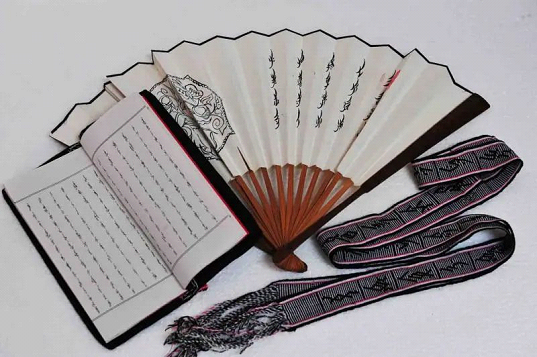女书编织带
Nushu braided belt
https://www.yzcity.gov.cn/cnyz/nswh/202206/8a90276de74541f48e8457a9a3e8a570.shtml 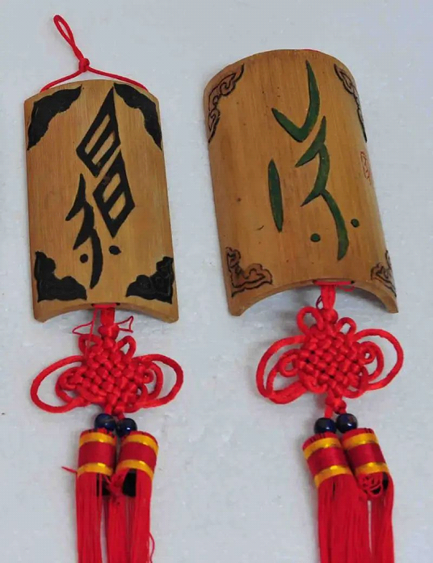竹挂女书
Nushu bamboo clasp
https://www.yzcity.gov.cn/cnyz/nswh/202206/8a90276de74541f48e8457a9a3e8a570.shtml

Embroider-Nushu
https://www.yzcity.gov.cn/cnyz/nswh/202206/8a90276de74541f48e8457a9a3e8a570.shtml 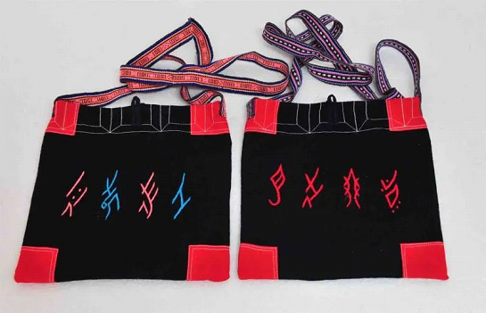女书背包
Nushu schoolbag
https://www.yzcity.gov.cn/cnyz/nswh/202206/8a90276de74541f48e8457a9a3e8a570.shtmlIn Search of the Whisper Song PART 1 | Nüshu Culture in China | Independent Documentary Nushu song
https://youtu.be/UWADRWPBLJg?si=nkqZ6K_DvRYfwr0P 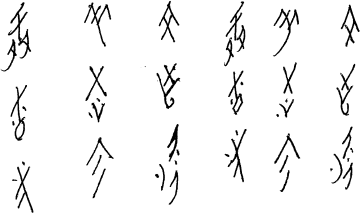 https://www.omniglot.com/writing/nushu.htm 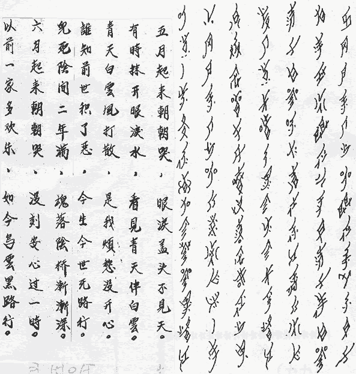| Mandarin | Translated with DeepL |
|
五月起来朝朝哭， 眼涙盖头不见天。 有时抹开眼涙水， 看见青天伴白云。 青天白云风打散， 是我烦愁没开心。 谁知前世积了恶， 今生今世无路行。 鬼死阴间二年满， 魂落阴桥渐渐深。 六月起来朝朝哭， 没刻安心过一时。 以前一家多欢乐， 如今乌云黑路行。 |
I'm up in May and I'm crying all the time. I can't see the sky when my eyes are covered with tears. Sometimes, when I wipe away my tears. I see the sky with white clouds. The sky and the clouds are scattered by the wind. It's because I'm sad and unhappy. Who knows that in my past life I have no way out in this life. Ghosts die in the underworld for two years. The soul falls to the bridge of the netherworld. I wake up in June and cry all day long. I never have a moment's peace of mind. The family used to be so happy Now the clouds are dark and the road is dark. |
Nushu Typeface Design

 https://www.commarts.com/project/36606/nushu
https://www.commarts.com/project/36606/nushu
Videos about Nushu
Nushu: A Script for Women
China's secret language that only women speak - BBC REEL
https://www.youtube.com/watch?v=DjeO8LHjpko https://www.youtube.com/watch?v=5t89hQdF2YIOnline Nushu Dictionary
https://nushuscript.org/en-US/Nushu Typeface
https://github.com/nushu-script/Nyushu?tab=readme-ov-fileNushu Tyepface 2
https://github.com/nushu-script/Nyushu/releases/tag/NshuF